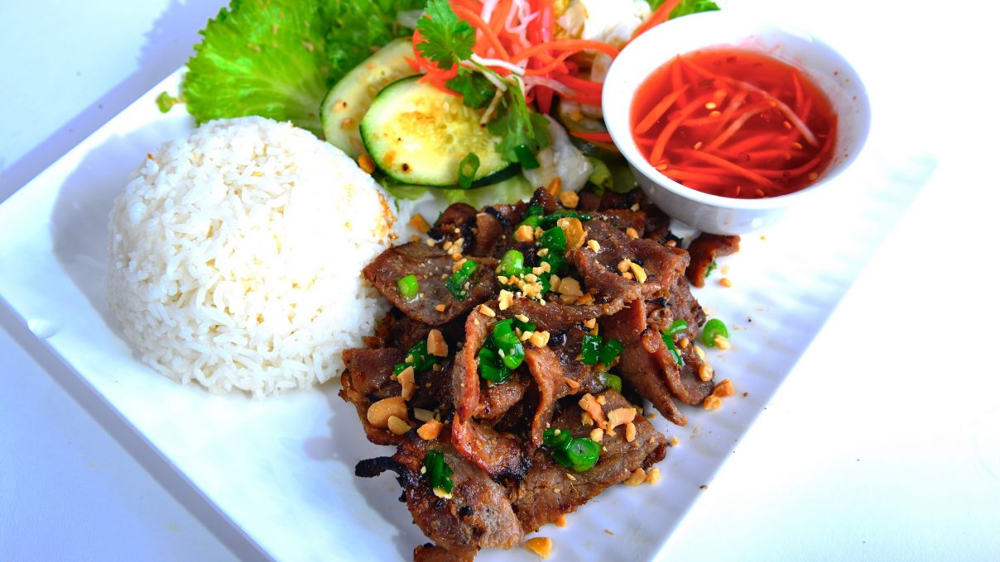

Com Tam Bi Suon

Description
Com Tam or Broken Rice is one of the typical dishes of Vietnamese people in Saigon
It is an attractive dish consisting of cooked broken rice, grilled pork chops, a little pickled vegetables, and chili garlic fish sauce.
Ingredients
- Broken rice
- 500 grams of pork chops
- 3 tbsp of honey.
- 5 tbsp of soy sauce
- 2 tbsp of chili sauce
- 1 tbsp of salt
- 1/2 cup of unsweetened fresh milk
- Fish sauce
- Some cloves of crushed garlic
Steps
- Marinate with spices for 2 hours or overnight.
- After the pork chops are marinated, you can grill it on a charcoal stove or an oven
- Put the meat on a tray wrapped by aluminum foil
- Pour coconut milk and marinade into and place it in the middle of the oven.
- Turn on the lower fire at 250ºC, grill for 30 minutes. After that, you flip the ribs to grill for another 30 minutes.